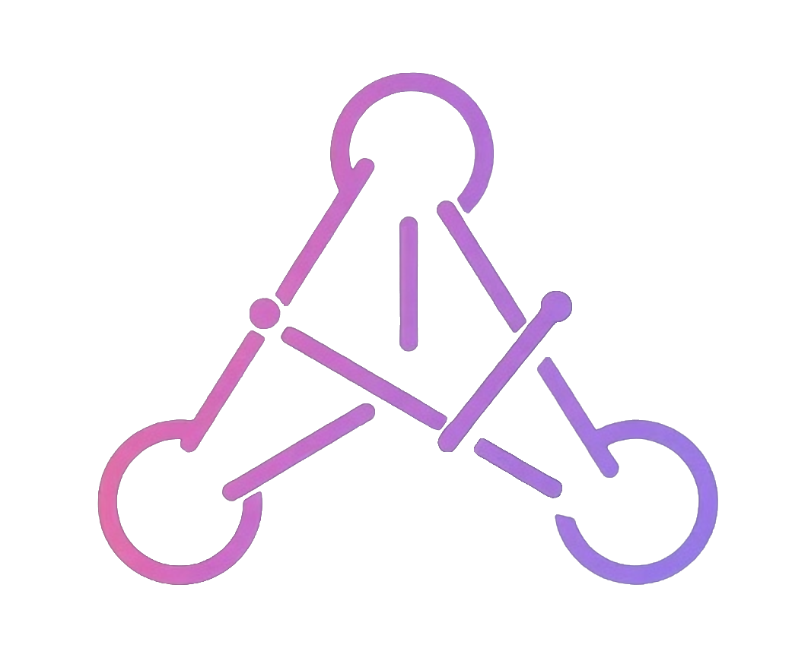

Go to arden-dev.com
Click Get Started → Create Account and register
Save your credentials — log in anytime with them
Create a project and start chatting with the AI
No local setup needed. The live site runs the full production stack: React · Python/FastAPI · Node.js · PostgreSQL on DigitalOcean.
Three independent LLM instances: a Supervisor (ReAct + memory) that delegates to a stateless Lore Bible Expert and Narrative Graph Expert, each with domain-specific tools and prompts.
SVG-based DAG editor with a hand-rolled layered layout algorithm (no external graph libraries). Both the user and the AI can modify the same graph with full concurrency handling.
Agents operate on structured JSON via three custom file tools. EditFileTool uses two-phase simulate-then-apply with automatic rollback and read-back verification on every write.
Persistent world-building data (characters, locations, organizations, events) managed by a dedicated expert agent and surfaced in the Lore Bible panel.
Export narratives as JSON and play them in Unity. The NarrativeTool plugin provides a DAG state machine, variable store, condition evaluator, and live graph visualizer.
Four containerized services (Docker Compose) on a DigitalOcean Linux VM with SSL, authentication, session management, and Langfuse observability.